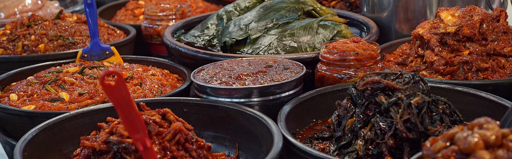
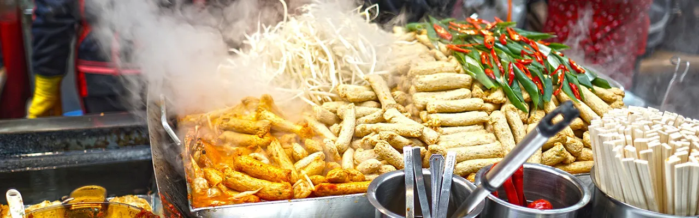

美食探索
我熱愛品嘗各種韓國美食，從傳統的泡菜、烤肉、炸雞到當代的炒年糕、部隊鍋等。希望透過分享我的美食探索之旅，向各位介紹不同種類的韓國料理，並推薦值得一試的餐廳和小吃攤位。
我的部落格旨在成為一個韓國美食的愛好者社群，一個可以探索、學習和分享的平台。我希望激發人們對韓國美食的熱情，幫助他們探索這個美味的世界，並將韓國的美食文化帶入他們的生活中。
食材和烹飪
分享有關韓國食材、烹飪技巧和食譜的信息，讓各位了解如何在家中製作美味的韓國菜餚。這包括如何選擇和使用特定的調味料、香料和材料，以及烹飪過程中的技巧。
餐廳評論
我會定期以客觀、專業和具體的方式分享我在不同餐廳和小吃攤位的用餐體驗，包括餐廳的環境、裝潢風格、用餐氛圍、及服務態度，還有食物品質，包含使用的食材質地、味道和新鮮度。這可以幫助各位找到值得一去的餐廳，並了解菜單上的招牌菜，有助於讀者在選擇菜單時做出更有信心的決定。
飲食文化與故事
韓國的飲食文化非常豐富，包括傳統的用餐禮儀、節慶食品和食品與社交的關聯。通過部落格分享這些飲食文化的方面，讓讀者更深入地了解韓國人的飲食習慣和價值觀。每道菜背後都有一個故事，包括食品的歷史、傳說和地方背景。這可以讓讀者更深入地了解韓國飲食的多樣性和意義。